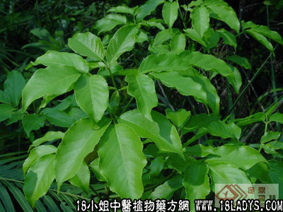

(本文解释权归中药材天地网兄弟站-18小姐中医植物药方网所有,如需转载请注明出处)
三桠苦(中药材植物名:三桠苦)(植物科目:芸香科)

别名：三叉虎。
植物名：三桠苦
生长环境：本品为灌木或小乔木。生于山地树林中，或靠近树林边缘、山脚、路旁。
分布：华南地区常见，广东省各地均有。此外，热带各地亦有。
入药部分：全株。
采集期：全年。
自采地点：山岗。
性味：性凉、味苦。
功能：清热解毒、去骨火、杀虫。
主治、用量和用法：1、癍痧发热：干用1至2两、清水煎服；2、湿火周身骨痛：干用根（或全株）1至2两、清水煎服；3、热毒疮：干用适量，煎水外洗；4、皮肤湿热：干用适量，煎水外洗；5、痔疮：干用适量、煎水熏洗患处。
验方1：（洗痔疮方）三桠苦、山大刀、忍冬叶各等分，煎水洗患处。
（方解）痔疮之生，不外醉饱入房，筋脉横鲜，精气浅脱，热毒乘虚下注、致为风湿燥热四邪所侵而成。有内外痔之分。初起久患，均宜熏洗。方中之三桠苦燥湿；山大刀、忍冬叶清凉解毒，并有祛风粥哦用，为熏洗痔疮之良好方剂。
（方歌）痔疮外洗效更高，三桠苦与山大刀，清凉解毒忍冬，熏洗兼施毒自无。
验方2：（治癍痧发热方）三桠苦1两、蛇泡簕根5钱、金盏银盘5钱、海金沙藤5钱、清水四碗、煎成一碗服。
（方解）本方三桠苦、蛇泡簕去胃热、清肝解毒；金盏银盘清热；海金沙藤清利小便，为清热解毒利尿之剂。
（方歌）三桠苦泄癍痧热，蛇泡簕艮盘金沙列，解热利水效入神，表里热邪随之愈。
(本文解释权归中药材天地网兄弟站-18小姐中医植物药方网所有,如需转载请注明出处)